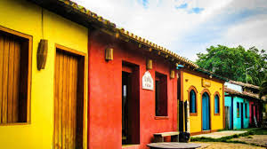
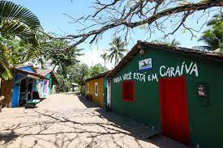
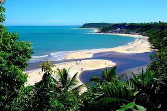
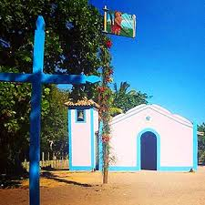
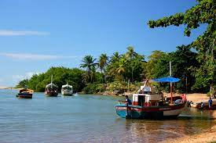

Antes de ir a qualquer lugar em Caraíva tenha uma certeza; nada de pressa. O tempo aqui é seu aliado e tudo acontece mais devagar.
DIA
Descer o rio de boia ou caiaque, praticar kitesurfe e stand-up, são algumas das atividades que você pode fazer durante o dia.
ANOITECER
E quando a noite cai Caraíva se transforma. As poucas luzes já criam um clima diferente. Restaurantes e bares reúnem turmas que se preparam para a madrugada.
NOITE
A noite começa mesmo depois das 22h. Descanse do dia de praia, pode até dormir um pouco, acorde para comer algo saboroso e diferente, em seguida é hora de arrastar o pé.

Caraíva é um vilarejo rústico, pé na areia, que até 2007 não tinha luz elétrica.

Uma das paradas mais famosas é a casa com a pintura “SORRIA, VOCÊ ESTÁ EM CARAÍVA”. Uma foto na fachada é irresistível.

Em Caraíva você pode escolher se quer tomar banho de rio ou de mar.

Igreja de São Sebastião, a igreja matriz foi construída por volta do século XVI.

Como atração do local é possivel descer o Rio Caraíva com boias coloridas, seguindo livremente a correnteza.